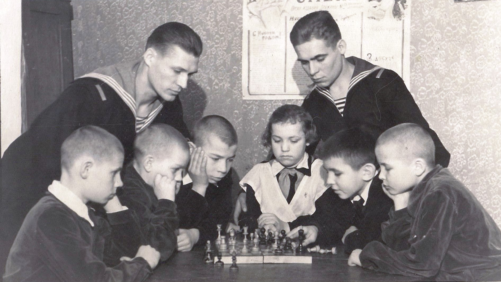
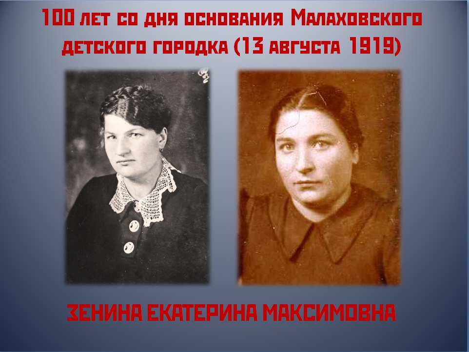

Малаховский детский городок

В суровые годы Гражданской войны в стране началась борьба с детской беспризорностью. На 1-м Всероссийском съезде учителей Московского уезда 21 апреля 1918 года с докладом о единой трудовой школе выступила Н. К. Крупская. Доклад о подготовке учителей прочла Н. Г. Левина, впоследствии – педагог в д/д № 12 в Малаховском д/городке.
Предпосылками организации Малаховского детского городка были, с одной стороны, голод, гражданская война и бедственное положение детей, с другой – большое количество дач, пустующих после национализации. 13 августа 1919 года на заседании Президиума Мосгубисполкома решено создать систему детских домов в пос. Малаховка. В Детгородке воспитывались в разные годы до 850 детей в возрасте от 8 до 18 лет.
Всей жизнью Городка руководило Управление во главе с директором Городка, завучем, старшим пионервожатым, начальником административно-хозяйственной части и бухгалтерией. В каждом детдоме имелись заведующий домом, 2 – 3 воспитателя, пионервожатый, повар, техничка и ночная няня. По одним данным, первоначально было создано всего 7 домов, разбросанных на площади 1,5 версты. Из них 5 приспособлены для жизни в зимнее время, а 2 – не приспособлены. По другим данным, в 1920 году было только 2 детских дома, в 1923 – 1924 году открыты детдома № 3, 4 и 5, в 1925 – 26 году дополнительно открыты детдома № 6, 7, 8, 9 и 10. В МДГ попадали круглые сироты, дети родителей, оказавшихся в трудной жизненной ситуации, а также дети репрессированных. Часто дети поступали из удельнинского «Муравейника», детдома, где жили дошкольники. Первые воспитательницы не имели педагогического образования, это были «делегатки, женщины в красных платочках, приставленные к воспитанию детей».
Воспитатели и воспитанники сполна испытали на себе тяготы двадцатых годов. Обратимся к архивным документам: на 23 июня 1920 года имелся скот, шла подготовка картонажной мастерской. 22 декабря 1920 года в протоколе заседания Совета 1-го Малаховского детдома отмечались трудности с продуктами питания. 1 сентября 1920 года – заседание 2-го Малаховского детдома, обсуждались острые проблемы: плохо с питанием, нет ни одежды, ни обуви, ни учебных пособий. В январе 1922 года лишь 25% детей спали на кроватях, кадров не хватало, продуктов не было. На 15 декабря 1926 года по Городку 822 воспитанника; зав. детгородком – Н. Г. Черепанов. Штат Малаховского д/городка в 1925/26 году – 127 человек на 621 ребёнка. С 1928 или 1929 по 1937 год директор – Курочкин (около 1898 г.р., член партии с 1921 года, образование низшее). До него за 9 лет сменилось не менее 9 директоров. Только один раз, 4 апреля 1927 года, рассматривался вопрос о дисциплине среди воспитанников: очевидно, в этом не было постоянной необходимости.

В тридцатые годы, укрепив материальную базу, Малаховский детский городок продолжал работу. Директор Иван Матвеевич Курочкин начал осуществлять длительные оздоровительные поездки на юг с 1930 года. 16 июня 1931 года: МОНО обследовал 56 детдомов, в удовлетворительном состоянии 15, в том числе Еврейская трудовая колония в Малаховке и МДГ. Выделили МДГ и по уровню детского самоуправления, и по числу комсомольцев и пионеров. 31 октября 1933 года в Малаховке создано кустовое учебно-методическое объединение. На 15 декабря 1935 года в Малаховском детском городке воспитывалось 840 детей. Ребята старше 14 лет выводились из д/домов на производство. Постановление Моск. Обл. Исполнит. Комитета Советов РК и КД от 28 июня 1939 года: «По итогам учебно-воспитательной работы в 1938/39 учебном году занести в областную Книгу Почёта и премировать директора Малаховского детгородка Халдееву А. Н. и инструктора по труду Миляшкевича Е. Н.». В 1934 году МДГ посетили Н. К. Крупская и А. В. Луначарский.
Воспитанники МДГ посещали школы Малаховки, как и все местные дети, в детдомах же проходило всё остальное их время. Детский городок существовал не только на средства, получаемые им от МОНО, но также на доход от мастерских, существовавших в городке с 1935 – 1936 годов до начала войны. Воспитанники обучались в мастерских различным ремёслам. Досугу и развитию детей уделялось в МДГ очень много внимания. Старшая пионервожатая Городка Лидия Тархановская, парторг и активная общественница, была награждена грамотой ЦК ВЛКСМ.
В 1935 – 1936 годах старшие воспитанники работали на строительстве Детской железной дороги в Кратово. Ребята также сажали лес между Малаховкой и Красково.

Жизнь воспитанников была налаженной, благополучной и интересной, и весть о начале Великой Отечественной войны 22 июня 1941 года прозвучала как гром среди ясного неба. Началась нелёгкая работа по строительству бомбоубежища. Неприятель тем временем подходил всё ближе к Москве, 17 октября пришёл приказ МособлОНО об эвакуации детей и воспитателей в двухдневный срок, а 19 октября выехали все дети МДГ, т.е. 840 человек. В эвакуацию уезжали, слившись в одну организацию, МДГ, Ухтомский детдом и Подольский детдом. Руководила эвакуацией директор МДГ А. Н. Халдеева. Спустя 1 месяц и 19 дней мучительной дороги пришло сообщение, что ехать нужно в Казахстан, где воспитателей и детей ждали тяжёлые бытовые условия и неприятие со стороны местного населения. Тем не менее, сумев освоиться на новом месте, после войны большинство эвакуированных осели в Казахстане. (А. Н. Халдеева, вернувшись в Малаховку, создала в посёлке Ухтомский детгородок, он состоял из трёх домов.)
Тем временем покинутые дачи МДГ в Малаховке не пустовали. На место уехавших пришли новые воспитанники. 15 ноября 1941 года МДГ реорганизован, сюда стали привозить детей, подбираемых с фронта за время военных сражений, а также из освобождаемых от оккупантов районов Московской области. Принято 814 детей. Директором назначен Михаил Кондратьевич Гумен. В те годы дети и взрослые всячески старались обходиться своими ресурсами, чтобы сэкономить казённые средства на благо страны. Посильный труд воспитанников включал в себя сбор лекарственных трав (154 кг за 1941/42 год), грибов (3120 кг), выращено более 12 тонн овощей. Собирали сосновые шишки и кору, чтобы сэкономить на топливе. В отчёте за 1942 год читаем, что воспитанники обязались подготовить подарки бойцам Красной армии к 25-летию Октября, а также оборудовали овощехранилище.
После войны поступление детей в детские дома неуклонно сокращалось. В конце 40-х – первой половине 1950-х детский дом в посёлке Малаховка располагался на двух территориях: на Пионерской и Рельсовой улицах - воспитанников было примерно 90 человек. Досуг дети посвящали играм, среди которых были казаки-разбойники, круговая лапта, штандарт, прыгалки, шахматы, фантики, классики, игры с мячом, футбол. На высоком уровне был спорт: дети занимались гимнастикой, проводились летняя и зимняя спартакиады. Организовывались походы в Лукьяновский лес, на Пехорку, в совхоз «Поля орошения». Шефами МДГ стали «красавцы морячки» из Северного морского и речного флота. В 1952 году шефы подарили детям телевизор с линзой.
Некоторые дети покидали детдом, обретая приёмных родителей. Пример тому – история бортмеханика, испытателя вертолётов Николая Дресвянина, усыновлённого семьёй завхоза в МДГ. Те же, кто прожил в детдоме до положенного возраста, при выпуске получали небольшую сумму денег и комплект одежды. Бывшие воспитанники МДГ нередко работали в Мособлэлектро, на Малаховском экспериментальном заводе (МЭЗ). Нередко воспитанники МДГ заканчивали художественное училище и работали потом в Гусь-Хрустальном.
Последний детский дом МДГ был закрыт в 1966 году.
Остаётся добавить, что некоторые сотрудники МДГ (инструктор по труду Е. М. Зенина, внештатный воспитатель Д. А. Потёмкина) впоследствии вошли в число первых собирателей Малаховского музея. Благодаря Д. А. Потёмкиной и Н. М. Пожидаевой собран большой объём информации о становлении и развитии МДГ, об эвакуации, о коллективе, воспитанниках и различных сторонах их жизни.